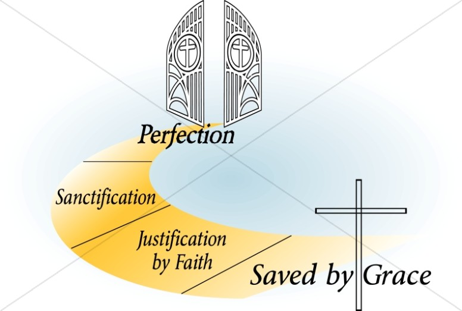

What is Eternal Life and How Do You Obtain It?
Everlasting Life is a Promise and a Gift to Believers
It is indescribable and one of the most fantastic spiritual blessing given to Christians but the one Christians know the
least about. It is the spiritual blessing of eternal life. Christians cannot be blamed, because there simply is no information
given in scripture. Nevertheless, eternal life is promised and there are a few associated ideas worthy of contemplating.
Jesus Christ taught "that whoever believes in Him should not perish but have everlasting life." This is part of what is
one of the best known Scripture in the Bible, and probably thousands of Christians can quote it. Yet, its depth and reality is
incomprehensible. Jesus spoke about eternal or everlasting life often, mentioned 15 times in the Gospel of John alone. The

epistle of 1 John also emphasizes eternal life. "And this is the promise that He has promised us, eternal life."
(1 John 2:25 Also in 5:11,13 and 20)
It is all part of the gift of God. God saved believers by grace, raised and seated them in heavenly places in Christ, as
Ephesians 2:5 and 6 teaches. For the Christian, it is the promise of fulfillment of a seemingly impossible dream, to live forever
and ever. It is so incredible that many shrug it off as pure fantasy. Its just too good to be true. Throughout the scriptures,
the future of unbelievers is harsh, a destiny of judgment and punishment. But for the people of God, those who believe and follow
the true God and His ways of righteousness, everlasting life. "For the wages of sin is death, but the gift of God is eternal
life in Christ Jesus our Lord." (Romans 6:23)
Realities that Jesus veiled in His earthly ministry were revealed in bite-size pieces to the Apostle Paul. By revelation, Paul
wrote "Behold, I tell you a mystery: We shall not all sleep, but we shall all be changed in a moment, in the twinkling of an
eye, at the last trumpet. For the trumpet will sound, and the dead will be raised incorruptible, and we shall be changed."
(1 Corinthians 15:51, 52) The sleep is a euphemism for death. It is used again in 1 Thessalonians 4:13-17 which culminates with
all living Christians being "caught up together with them (all those who have died) in the clouds to meet the Lord in the air.
And thus we shall always be with the Lord."
This is called in many versions "the gathering together" and sometimes referred to as "The Rapture." In
Philippians, Paul writes that Christians "agerly wait for the Savior, the Lord Jesus Christ, who will transform our lowly
body that it may be conformed to His glorious body." (3:20, 21) It is all the same event: the instantaneous simultaneous
transformation into spiritual bodies and the grand exit from earth to be forever with the Lord. What happens next is the
unfolding of prophecies from the Old Testament, the Gospels and the book of Revelation. Many events precede what is called the
Day of the Lord, or Judgment Day. There is definitely a role for Christians, too. As Jude 14 reminds, "Behold, the Lord comes
with ten thousands of His saints." There are future responsibilities for the people of God.
Rewards and crowns for believers are mentioned in the Bible. These are awarded for faithfulness in running the race, for preaching
the word of God and shepherding God's people. So, there is plenty to do in Christian service until that great and glorious day
arrives. Romans 13:11 and 12 says it is "high time to awake out of sleep; for now our salvation is nearer than when we first
believed. The night is far spent, the day is at hand." Peter quotes from Isaiah 65:17, "Nevertheless we, according to His
promise, look for new heavens and a new earth in which righteousness dwells." (2 Peter 3:13) The spiritual blessing of eternal
life is too big for finite minds to grasp, but the Word of God has given intriguing clues and morsels to chew on and savor.
"And God will wipe away every tear from their eyes; there shall be no more death, nor sorrow, nor crying. There shall be no
more pain, for the former things have passed away." (Revelation 21:4)